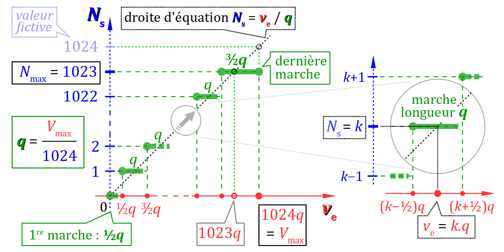

Le microcontrôleur Atmel ATMega328P à cœur AVR employé sur de nombreuses cartes Arduino (Uno, Nano, Mega…) intègre un convertisseur analogique numérique W ou CAN (en anglais, ADC pour analog‑to‑digital converter). Multiplexé sur un port à 8 broches, il permet d'y « lire » par numérisation des signaux d'entrées analogiques de tension unipolaire comprise entre 0 et 5 V en courant continu – cet intervalle constituant ce qu'on appelle la pleine échelle du CAN. En quelque sorte, il s'agit donc d'un voltmètre rudimentaire.
Sur une carte Arduino Uno, le port analogique compte 6 broches, numérotées de A0 à A5. Cela est suffisant pour la plupart des systèmes que peut gérer une telle carte. On peut y raccorder toutes sortes de composants dont la tension variable porte une information quantifiable, typiquement :
- des boutons tournants de type potentiomètre (cf. la photo ci‑contre) pour permettre à l'utilisateur de régler un paramètre sur un système ;
- des capteurs divers pour mesurer des grandeurs physiques de l'environnement d'un système ; par exemple, la température avec une thermistance, la luminosité avec une photorésistance (cf. la photo ci‑contre), etc.
Et pour calibrer les variations de la tension d'entrée dans la pleine échelle du CAN, on a en général recours à un pont de mesure, dont le plus simple est le pont diviseur de tension.
En revanche, sur un microcontrôleur Atmel ATMega328P – et plus généralement sur les microcontrôleur à cœur AVR – on ne trouve pas de convertisseur numérique analogique W ou CNA (en anglais, DAC pour digital-to-analog converter). Dans la gamme des cartes Arduino, ce dispositif n'est disponibles que sur celles équipées d'un microcontrôleur à cœur ARM (Arduino Due…).
Pour mettre en œuvre des sorties analogiques sur une carte comme la Arduino Uno, il existe néanmoins une alternative via la modulation de largeur d'impulsion W ou MLI (en anglais, PWM pour pulse width modulation). Appliquée à une sortie numérique disposant de cette fonctionnalité (broches n° 3, 5, 6, 9, 10 et 11), cette technologie logicielle permet d'« écrire » des variations de la valeur moyenne du signal numérique de tension tout‑ou‑rien 0 ‑ 5 V.
Ainsi, on peut aisément faire varier la caractéristiques de certains composants :
- la luminosité d'une led (car, du fait de la persistence rétinienne, le cerveau humain n'est pas capable de percevoir le clignotement de cette dernière à la fréquence de la MLI) ;
- la fréquence de rotation d'un moteur à courant continu (car l'inertie du rotor suffit à lisser le couple saccadé généré par le signal électrique en MLI).
En application des chapitres précédents sur les types numériques, ce chapitre aborde la thématique des entrées‑sorties analogiques sur une carte Arduino dans cet ordre :
- la lecture d'entrées analogiques via la fonction
analogRead, avec la possibilité d'ajuster la tension de pleine échelle du convertisseur ; - l'écriture de sorties digitales modulées via la fonction
analogWrite.
En revanche, hormis quelques rappels, ce chapitre n'a pas vocation à détailler toutes les bases du conditionnement et de la conversion des signaux, qui est un domaine très complexe de la physique appliquée. En cas de lacunes, on pourra dans un premier temps se reporter à ce cours de Sciences de l'ingénieur et ce sujet de travaux pratiques .
Et pour une connaissance approfondie des mécanismes de bas niveaux mis en œuvre par les fonctions analogRead et analogWrite, il est recommandé de consulter leur code source, qui est placé dans le fichier wiring_analog.c G de la bibliothèque Arduino.
Lecture d'entrées analogiques
Principe et caractéristiques générales du CAN
Le convertisseur analogique numérique intégré au microcontrôleur Atmel ATMega328P emploie la technologie dite à approximations successives W (en anglais, successive approximation register, abrégée SAR) qui offre un excellent compromis en termes de rapidité et précision de conversion.
Il permet de numériser par un nombre en sortie Ns de type entier la tension d'entrée ve entre l'une des broches du port analogique Ax et la broche GND.
Les caractéristiques de ce CAN intégré au microcontrôleur Atmel ATMega328P sont les suivantes.
- Il opère une conversion unipolaire, avec une pleine échelle de tension 0 ‑ 5 V.
- Il encode la numérisation sur n = 10 bits procurant une excursion de Ns comprise entre 0 et Nmax = 2n − 1 = 1023.
- Sa tension de pleine échelle Vmax est ajustable :
- soit à 1,1 V par une référence de tension interne à la carte ;
- soit entre 0 et 5 V par une référence de tension externe, établie entre les broches AREF et GND.
La notion de quantum
De façon générale, le quantum q d'une conversion analogique-numérique représente l'accroissement en volt de la tension d'entrée ve pour obtenir un accroissement d'exactement une unité – donc, +1 – du nombre en sortie Ns.
Le CAN intégré au microcontrôleur Atmel ATMega328P étant unipolaire, son quantum de la conversion vaut :
Si la tension de pleine échelle Vmax vaut bien 5 V (pas d'ajustement), et sachant que Nmax = 1023 alors le quantum de conversion vaut q = 5/1024 ≈ 5 mV.
Cas du microcontrôleur Atmel SAM3X8E ARM Cortex-M3
Dans le microcontrôleur Atmel SAM3X8E à cœur ARM qui équipe les cartes Arduino Due, le CAN présente des caractéristiques générales similaires, mais avec :
- une tension de pleine échelle plus faible Vmax = 3,3 V ;
- une meilleure résolution de 12 bits, qui donne au nombre en sortie Ns une excursion comprise entre 0 et 212 − 1 = 4095 ;
- une référence de tension interne de 0,6 V qui peut être multipliée par les facteurs de gain ×2 (soit 1,2 V) et ×4 (soit 2,4 V).
Avec ces caractérisques, le quantum de conversion vaut q = 3,3/4096 ≈ 0,8 mV.
Fonction de transfert du CAN
La fonction de transfert d'un CAN est la fonction mathématique qui à chaque valeur de la tension d'entrée ve fait correspondre une valeur du nombre en sortie Ns.
Très classiquement, le CAN intégré au microcontrôleur Atmel ATMega328P opère en conversion linéaire centrée. Sa fonction de transfert est représentée sur la figure ci‑dessous :
Sa courbe représentative – dite en escalier – admet des marches centrées sur la droite d'équation Ns = ve / q. Ces marches ont une longueur constante de la valeur du quantum q, à l'exception de :
- la première marche, dont la longueur vaut q/2 ;
- la dernière marche, dont la longueur vaut 3q/2.
Définition algébrique de la fonction de transfert du CAN
Algébriquement, la fonction de transfert d'un CAN à conversion unipolaire centrée est définie par les formules ci‑dessous :
- si ve ∊ [0, Vmax − ½ q[, alors Ns = ℛ(ve / q) où ℛ est la fonction arrondi entier ;
- si ve ∊ [Vmax − ½ q, Vmax], alors Ns = Nmax (expression constante).
Autrement dit, cette fonction peut s'écrire : Ns = min{ℛ(ve / q), Nmax}.
Dans un programme informatique en langage C, si l'on souhaite simuler la fonction de tranfert ci‑dessus (cf. ex. C3‑5 ), on peut :
- pour la fonction d'arrondi ℛ, employer la fonction
rounddéclarée dans le fichier d'en‑têtemath.hde la bibliothèque standard du langage C – directement utilisable dans un programme Arduino (cf. chap. C2‑IV ) ; - pour la fonction min, employer :
#define min(a,b) ((a)<(b)?(a):(b))
Conseils pratiques
Dans l'environnement Tinkercad, le CAN de la carte Arduino Uno est simulé sans défaut : sa fonction de transfert est conforme à la présentation théorique ci‑dessus.
Mais dans la pratique avec une vraie carte Arduino, il est recommandé de prendre deux précautions.
- Il faut préalablement effectuer une mesure précise de la valeur de Vmax – en particulier quand cette dernière n'est pas ajustée. Pour cela, il suffit d'employer un voltmètre entre les broches 5V et GND.
- si l'alimentation est fournie via la prise USB, il n'est pas rare d'obtenir pour Umax une tension de seulement 4,9 voire 4,8 V ;
- si l'alimentation est fournie via le connecteur barillet 7 ‑ 12 V, on obtient bien Umax = 5,0 V avec une source de tension externe réglée entre 7 et 9 V ;
- Il faut ne pas se fier aux valeurs de Ns lorsque la tension d'entrée ve est au voisinage de 0 V, et tout particulièrement lorsqu'on a ve < 0,1 V.
Fonction de lecture d'une entrée analogique
Sur une carte Arduino ou compatible, contrairement à une broche du port numérique, une broche Ax du port analogique n'a pas besoin d'être configurée (avec la fonction pinMode) avant d'être employée, car elle ne peut fonctionner que comme une entrée.
Pour y lire une tension d'entrée ve par rapport à la borne GND, on emploie la fonction analogRead dont un appel se code :
analogRead(pin)
A
et où l'argument pin est une expression qui code le numéro de la broche du port analogique avec ou sans le préfixe A.
La valeur retournée par cette fonction est le nombre en sortie Ns encodé dans le type int qui numérise la tension d'entrée ve.
On rappelle que, pour un convertisseur unipolaire, l'excursion définie par l'intervalle 0 ‑ Nmax du nombre en sortie Ns dépend du nombre de bits d'encodage du CAN intégré au microcontrôleur de la carte. Cette caractéristique est essentielle pour interpréter la valeur de Ns – en particulier pour déduire de la valeur de Ns (nombre sans dimension) la valeur en volts de la tension d'entrée ve lue par un appel de la fonction analogRead.
Le codage de l'argument pin par un numéro de broche de la forme Ax est possible parce qu'il s'agit d'identificateurs de pseudo‑constantes, qui sont définies dans le fichier pin_arduino.h (cf. chap. C2‑VII ). On peut donc coder par exemple :
const int potentiometerPin = A0;
puis utiliser cet identificateur à la place de A0 partout dans le code, notamment comme argument de la fonction analogRead.
Expérimentation
Considérons le montage académique en figure ci‑contre où le curseur d'un potentiomètre est reliée à la broche A0 du port d'entrée analogique d'une carte Arduino Uno.
- Dans le cadre d'une simulation sur Tinkercad, on peut considérer que la tension de référence à laquelle le potentiomètre est alimenté vaut bien Vmax = 5 V.
- On rappelle par ailleurs qu'avec le CAN 10 bits du microcontrôleur Atmel 328P, on a Nmax = 1023.
À partir de la valeur de Ns rendue par l'appel de la fonction analogRead(A0), il est impossible de déterminer la valeur exacte de la tension d'entrée ve sur la borne A0 qui a généré ce nombre.
En effet, ve peut en principe se situer partout sur la marche dont la « hauteur » est donnée par Ns. On prend donc « arbitrairement » le point milieu de la marche, situé à son intersection avec la droite d'équation Ns = ve / q. On obtient alors tout simplement :
ve = Ns . q
Sur ce principe, le programme ci‑dessous code l'affichage toutes les secondes sur le moniteur série la valeur supposée de la tension d'entrée ve (variable inputVoltage) avec 3 décimales :
float quantum = 5.0 / 1024; // volts
void setup(){
Serial.begin(115200);
}
void loop(){
float inputVoltage = analogRead(A0) * quantum;
Serial.println(inputVoltage, 3);
delay(1000);
}
Par ailleurs, il est intéressant d'observer ce qui se passe si l'on expérimente dans les positions extrêmes de la course du potentiomètre, en comparant les valeurs affichées par le voltmètre simulé par Tinkercad, et la valeur supposée de la tension d'entrée ve affichée sur le moniteur série (variable inputVoltage).
- Dans la position minimale (bouton complètement tourné à gauche), on obtient
0.000sur le moniteur série et 0.00 V sur le voltmètre, comme attendu ; - Dans la position minimale (bouton complètement tourné à droite), on obtient
4.995alors qu'on lit 5.00 V sur le voltmètre. Mais c'est logique car :
- Pour déterminer dans un programme la valeur de la tension d'entrée ve à partir de celle du nombre de sortie Ns, on peut aussi employer la fonction de mise à l'échelle
mapprésentée au chap. C2‑IV , avec la syntaxe :
map(analogRead(pin), 0, 1024, 0, Vmax) / 1000.0
et en codant la valeur de Vmax en millivolts (car la fonctionmapn'opère que sur des entiers) et en divisant le résultat par1000.0bien entendu (pour harmoniser le résultat avec une division algébrique, et non pas euclidienne). - Dans la pratique, il est rarement nécessaire de déterminer la tension d'entrée ve à laquelle correspond le nombre en sortie Ns rendu par un appel de la fonction
analogRead. Dans toutes sortes d'application (potentiomètre, capteur, etc.), il est plus efficace de procéder directement par proportionnalité sur la valeur de Ns au regard de son excursion maximale Vmax. Là encore, la fonctionmappeut être bien utile !
Ajustement de la tension de pleine échelle du CAN
Sur une carte Arduino, pour optimiser la résolution d'une conversion (c'est‑à‑dire, avoir un quantum de conversion le plus petit possible), la tension de pleine échelle Vmax est ajustable grâce à la fonction analogReference A.
En revanche, la valeur de pied d'échelle 0 V de la tension d'entrée est immuable sur le CAN intégré à la carte.
Les possibilités d'ajustement de Vmax sont très diverses selon les modèles de cartes. Sur une carte Arduino Uno, on peut :
- soit employer la tension de référence interne de 1,1 V en codant directement l'instruction :
analogReference(INTERNAL);
ce qui offre un quantum de conversion q ≈ 1 mV cinq fois plus précis que par défaut, mais une échelle de tension cinq fois plus réduite ; - soit appliquer une tension de référence externe comprise entre 0 et 5 V sur la broche AREF de la carte, avec un circuit potentiométrique suffisamment impédant (typiquement autour de 5 kΩ), et en codant l'instruction :
analogReference(EXTERNAL);
cela permet d'ajuster au mieux la pleine échelle – et ainsi optimiser le quantum – en fonction du besoin spécifique de tel ou tel montage.
Et pour régler à nouveau la valeur de Vmax à sa valeur par défaut (5 V sur une carte Uno), il suffit de remettre hors tension la broche AREF et de coder l'instruction :
analogReference(DEFAULT);
En recourant pour le circuit potentiométrique au pont diviseur de tension représenté en figure ci‑contre (R1 = 3,3 kΩ et R2 = 4,7 kΩ), alimenté par la tension globale de 5 V issue du régulateur la carte, la tension de référence externe appliquée sur la broche AREF vaut :
Vref = 5 × 4,7 /(3,3 + 4,7) ≈ 2,94 V
En appelant la fonction analogReference(EXTERNAL), on obtient alors un quantum q ≈ 2,94 / 1024 ≈ 2,87 mV.
Écriture de sorties digitales modulées
En rappel de l'introduction de ce chapitre, en l'absence de convertisseur numérique analogique (CNA) – ce qui est le cas sur les microcontrôleurs à AVR embarqués sur les cartes Arduino Uno, Mega, Nano… – il est quand même possible de faire varier la tension moyenne de certaines sorties du port numérique, par la technique dite de modulation par largeur d'impulsion.
Principe et caractéristiques de la MLI
La modulation par largeur d'impulsion W ou MLI – en anglais pulse width modulation, abrégée PWM – peut opérer sur certaines broches du port numérique d'une carte Arduino (broches qui doivent, bien évidemment, être configurées en sortie dans le programme).
La MLI consiste à générer sur une telle broche un signal logique périodique et rectangulaire de tension u tel que :
- sa période T est suffisamment petite pour être négligeable au regard de l'échelle de temps de fonctionnement du système,
- son rapport cyclique α est modulable en temps‑réel ; c'est le paramètre de la modulation.
Le signal logique de sortie ainsi généré est cadencé par un timer interne W à la carte, piloté par le microcontrôleur en parallèle de l'exécution du programme.
Rappelons qu'un signal logique de tension u ne peut prendre que deux valeurs basse et haute – respectivement Umin = 0 V et Umax = 5 V pour une carte Arduino Uno.
Si le signal est périodique et rectangulaire, il est caractérisé par sa période T et son rapport cyclique α = TH/T où TH est la durée du temps haut dans la période du signal ; α est donc un nombre compris entre 0 et 1.
Si Umin= 0 V, alors il en résulte sur la broche une tension moyenne :
Umoy = α.Umax
donc proportionnelle à α et comprise entre 0 et Umax – avec, en particulier, Umoy = 0 si α = 0 et Umoy = Umax si α = 1.
Si la fréquence f = 1/T du signal est suffisamment élevée (dès 30 Hz environ, mais en général, on module via des fréquences beaucoup plus élevées, au moins 300 Hz), cette technique offre de nombreuses applications :
- Elle permet notamment de faire varier la luminosité d'une led (cf. l'exemple infra ) – la persistance rétinienne empêchant l'œil humain de percevoir les clignotements rapides de la led.
- De même, on peut :
- moduler l'amplitude du son d'un buzzer,
- piloter la vitesse de rotation d'un moteur à courant continu (via un hacheur), etc.
Cas de la carte Arduino Uno
Sur une carte Arduino Uno, les broches du port numérique nº 3, 5, 6, 9, 10 et 11 (toutes repérées sur la carte par le symbole « ~ ») sont pilotables en MLI, avec les caractéristiques suivantes :
- un encodage sur 8 bits de la valeur du rapport cyclique, c'est‑à‑dire par un nombre entier compris entre 0 et 28 − 1 = 255 ;
- une fréquence de modulation de :
- 490 Hz pour les broches n° 3, 9, 10 et 11 ;
- 980 Hz pour les broches nº 5 et 6 ;
sachant par ailleurs que la précision du rapport cyclique est moindre sur les broches nº 5 et 6 que sur les autres broches si l'on appelle dans le programme les fonctions millis et delay, car ces dernières utilisent le même timer.
Conseils pratiques
Comme pour le CAN (cf. supra ), l'amplitude réelle du signal de tension en MLI n'est pas exactement égale à sa valeur théorique Umax = 5,0 V. Selon la valeur réelle de la tension d'alimentation de la carte, on peut observer un écart jusqu'à ±0,2 V.
Fonction d'écriture analogique d'une sortie numérique
Avec une carte Arduino, pour écrire (c'est‑à‑dire régler) une tension de sortie moyenne Umoy par rapport à la borne GND sur une broche du port numérique étiquetée PWM, on emploie la fonction analogWrite dont un appel se code :
analogWrite(pin, value);
A
où :
- l'argument pin est une expression qui code le numéro de la broche du port numérique de la carte ;
- l'argument value est une expression à valeur entière (encodée dans le type
int), comprise entre0et255(pour une carte Uno), qui code par proportionnalité la valeur du rapport cyclique α entre 0 et 1.
analogWrite est de type void, elle ne retourne donc aucune valeur.
En d'autres termes, après exécution d'une instruction de la forme :
analogWrite(pin, value);
la valeur du rapport cyclique du signal de MLI sur la broche pin vérifie la relation :
α = value / 255
et, si Umax = 5 V alors la tension de sortie moyenne exprimée en volts sur la broche pin vaut :
Umoy = 5 × value / 255 = value / 51
Après un appel de la fonction analogWrite, le signal de MLI est maintenu sur la broche jusqu'au prochain appel d'une des fonctions analogWrite, digitalWrite ou digitalRead appliquées à cette broche.
Application pour une led à luminosité variable
Considérons le montage académique ci‑contre avec une carte Arduino Uno et :
- une led dont l'anode est reliée (via une résistance de limitation de courant) à la broche PWM nº 3 du port numérique ;
- un potentiomètre relié à la broche analogique A0.
Comme une led est un composant non linéaire avec un phénomène de seuil très marqué, pour faire varier sa luminosité, il n'est pas possible de lui appliquer une tension continue dont on ferait varier le niveau.
C'est typiquement dans un tel cas que la modulation par largeur d'impulsion apporte une solution adéquate : elle soumet la led à des pics de tension toujours supérieurs à sa tension de seuil, mais d'une durée éventuellement très courte. Pour l'œil humain, la discontinuité du signal est imperceptible mais la led apparaît significativement moins brillante que si elle était alimentée en tension continue, par effet de persistance rétinienne W.
Pour que la luminosité de la led soit proportionnelle à la position du curseur du potentiomètre dans sa course, il suffit de coder le programme ci‑dessous :
const int8_t potentiometerPin = A0;
const int8_t ledPin = 3;
void setup() {
pinMode(ledPin, OUTPUT);
}
void loop() {
int16_t potentiometerValue = analogRead(potentiometerPin);
uint8_t brightness = map(potentiometerValue, 0, 1023, 0, 255);
analogWrite(ledPin, brightness);
delay(10); // for a fluid Tinkercad simulation
}
où, encore une fois, la fonction map (cf. chap. C2‑IV ) est bienvenue pour effectuer le calcul de proportionnalité.
Codage de l'argument value
Lors d'un appel :
analogWrite(pin, value)
le codage l'argument value dépend de la façon dont on exprime le rapport cyclique α du signal de tension u engendré sur la broche spécifiée par l'argument pin.
- Si α est exprimé comme un nombre décimal compris entre 0 et 1, donc codé comme un type décimal comme
float, alors on peut coder value par une expression de la forme :
round(255 * α) - Si α est exprimé comme un nombre entier compris entre 0 et 100 – autrement dit un pourcentage – alors on peut coder value par une expression de la forme :
map(α, 0, 100, 0, 255)
On peut aussi être amené à coder l'argument value à partir de la valeur moyenne de la tension Umoy souhaitée sur la broche pin.
- Si Umoy est exprimée en volts comme un nombre décimal compris entre 0 et 5 (autrement dit codé dans un type décimal comme
float), alors on peut coder value par une expression de la forme :
round(255 * Umoy / 5) - Si Umoy est exprimée en millivolts comme un nombre entier compris entre 0 et 5000, par exemple codé dans le type
int16_t, alors on peut coder value par une expression de la forme :
map(Umoy, 0, 5000, 0, 255)
Enfin, si l'argument value est destiné à exprimer le niveau d'intensité lumineuse d'une led à partir d'un code de couleur codé sur 8 bits, il suffit simplement de donner à value la valeur de ce code en base 10, ou même en base 16 avec le préfixe 0x.
Considérons le montage académique ci‑contre avec une carte Arduino Uno et une led RBG dont les anodes rouge, verte et bleue sont respectivement reliées (chacune via une résistance de limitation de courant) aux broches PWM nº 8, 9 et 10 du port numérique de la carte.
Pour obtenir avec la led, comme sur la capture d'écran, la couleur HTML MediumOrchid dont le code est #BA55D3, on peut coder le programme ci‑dessous :
const uint8_t ledRedPin = 9;
const uint8_t ledGreenPin = 10;
const uint8_t ledBluePin = 11;
void setup() {
pinMode(ledRedPin, OUTPUT);
pinMode(ledGreenPin, OUTPUT);
pinMode(ledBluePin, OUTPUT);
analogWrite(ledRedPin, 0xBA);
analogWrite(ledGreenPin, 0x55);
analogWrite(ledBluePin, 0xD3);
}
void loop() {
delay(10); // for a quicker Tinkercad simulation
}
Modification de la fréquence de MLI
Pour piloter un moteur à courant continu en variation de vitesse, la fréquence de MLI mise en œuvre par défaut sur une carte Arduino Uno n'est pas suffisante. En effet, à moins de 5 kHz, il est difficile d'atteindre le régime dit de conduction continue qui garantit une bonne stabilité du courant dans le rotor.
Pour surmonter cette difficulté, il est possible de modifier la fréquence d'un timer de la carte. Néanmoins, une telle modification peut avoir un impact sur les fonctions millis et delay. On peut continuer à employer ces fonctions, mais il faut tenir compte de l'impact de la modification de la fréquence du timer qui les gère. De plus, il n'est pas possible d'ajuster finement cette fréquence, mais seulement par puissances de 2 ; typiquement, on passe immédiatement de 8000 à 16000 Hz.
Une solution plus robuste consiste à employer une carte à microcontrôleur plus performante, comme une Teensy 3.x . Avec une telle carte, il est possible de modifier la fréquence de MLI directement par une appel de la fonction spécifique analogWriteFrequency fournie dans la bibliothèque associée à cette carte.